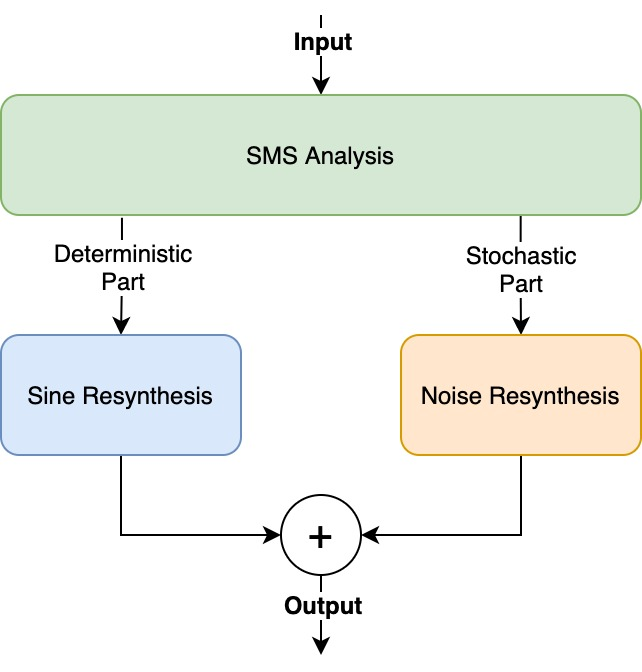
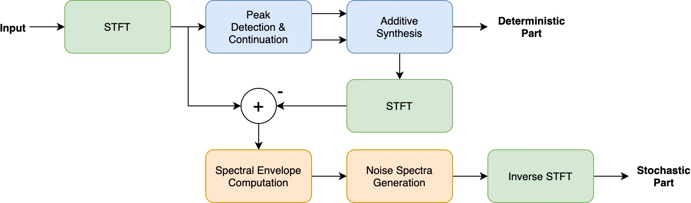

WELCOME
Welcome to Y3857872’s submission for the ‘Physical Modelling Synthesis’ module of 2020/21. The aim of this website is to provide you with a brief overview of physical and spectral modelling synthesis, an in-depth explanation of a given spectral system design, and a range of examples demonstrating the system’s functionality.
PHYSICAL MODELLING SYNTHESIS
Physical modelling synthesis is an alternative approach to sound design in which a sound waveform is procedurally generated and sampled by a simulated mathematical model at its source. The model is typically defined by the limitations and natural behaviours found in rational physics in order to conceptualise and synthesise complex and acoustic audio systems. At a basic level, a physical model consists of an excitation (e.g. a strike) or a driving mechanism (e.g. the flow of air) interacting with a resonator. Thus, such a model can only be physical if its behaviour is determined by physical parameters and the equation defining and driving the model is based on physical laws.
Ultimately, this technique provides very rich and dynamic audio generation capabilities for low computational memory, and thus was key to the development of some of the most groundbreaking synthesisers during the rise of the digital synth era. Most notably, the Yamaha VL1 was the first commercial synthesiser to implement physical modelling techniques in 1994 after 5 years of development, before being followed by the Korg Prophecy in 1995. Although these advancements enabled new research into audio synthesis, new problems had been encountered to work around. For example, as sound is procedurally created through mathematical models rather than stored samples in memory, the CPU can be a limiting factor in the complexity of sounds that are produced.
The Yamaha VL1 can be seen in Figure 1, along with a sound demo exemplifying the complex capabilities in Figure 2:
Figure 1: Yamaha VL1 [1].
Figure 2: Yamaha VL1 Factory Demo Song [2].
SPECTRAL MODELLING SYNTHESIS
Similar to physical modelling, spectral modelling synthesis is an acoustic modelling technique based on mathematical concepts of Fourier and psychoacoustics to extract fundamental data components that better represent the human perception of sound. First pioneered by Xavier Serra for his PhD thesis in 1989, its objective is to simplify the spectral characteristics of a sound in order to be flexible in presentation, computationally efficient, and judged solely on the quality of the sound it produces. [3] The model, seen in Figure 3 is broken down into two mathematically defined parts: deterministic and stochastic.
Figure 3: Spectral Modelling Synthesis Overview.
The deterministic part constitutes all harmonic content and thus is modelled as a summation of sinusoids defined by frequency and amplitude functions. On the other hand, the stochastic part represents all noise content and in modelled as a series of spectral envelopes excited by white noise that function as a time-varying filter. Separating the signal into two parts first involves replacing segments of the time-domain input signal with their short-time Fourier transforms (STFT). Once transformed, a series of peak detection, pitch estimation, and continuation modules are used between each of the segments to locate and predict the sinusoidal harmonics within the signal known as the deterministic part. The stochastic part is then defined as the residual signal after the deterministic part is subtracted from the input, leaving just the noise content. A flow diagram detailing this separation can be seen in Figure 4:
Figure 4: Spectral Modelling Synthesis Methodology.
With this simple yet effective representation of acoustics, spectral modelling provides an adaptable and comprehensive sound model for the analysis, transformation, and synthesis of audio. There are many applications, including, but not limited to, speech analysis, acoustic instrument synthesis, and audio based effects. We can demonstrate the overall process and its applications by looking at the spectral effects in our own system design.